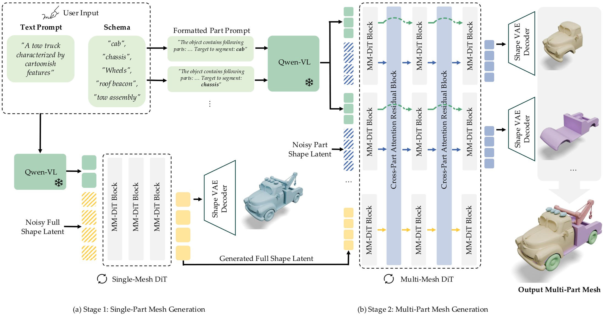
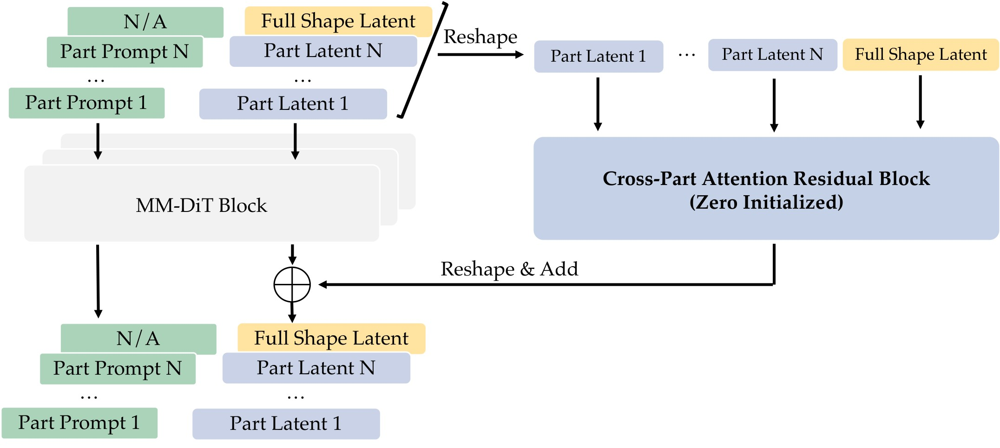
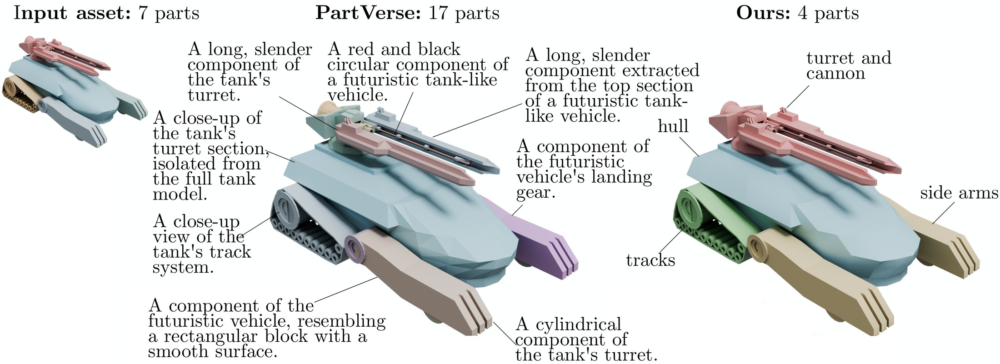
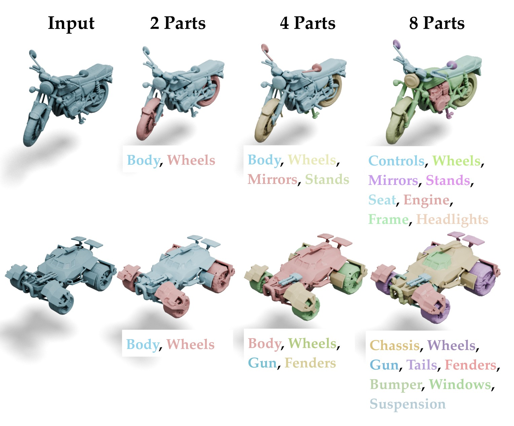
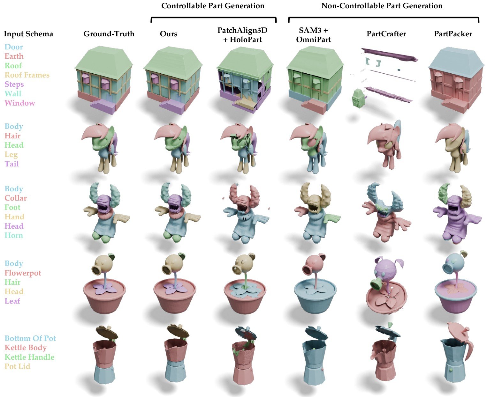

Jellyfish race car
“A jellyfish-themed race car.”
Loading model…
Each example below pairs a live 3D viewer with the resulting in-engine behavior video. Drag to rotate, scroll to zoom, slide the explode control to separate parts, and hover any part to see its label.
“A jellyfish-themed race car.”
Quadrotor with articulated blades and landing legs.
Holistic input mesh generated by another 3D model
Robot with independent head, torso, arms and legs.
Holistic input mesh created by an artist
Body and rotor blades as independent parts for spin animation.
Character with separable props (staff, orb, feather) for coordinated motion.
Holistic input mesh generated by another 3D model
Lid and base as independent parts to drive an opening animation.
Stem, petals and leaves as independent parts for swaying motion.
Interactive 3D assets used in games and simulation are typically decomposed into specific semantic parts to support animation, physics, and scripted behaviors, yet most generative 3D models produce either monolithic meshes or arbitrary part decompositions that cannot be aligned with application-specific requirements.
We present CubePart, a generative framework for open-vocabulary, part-controllable 3D mesh generation that exposes part structure as an explicit inference-time control signal. Given a global text prompt and a user-defined parts schema expressed as an open-ended list of part names, our method generates a set of meshes—one per schema element—that assemble into a coherent object while respecting the specified semantic structure.
To enable this capability, we introduce a scalable data pipeline to construct a large open-vocabulary, part-labeled 3D dataset, along with a two-stage generative architecture that separates global shape synthesis from part-level decoding. We demonstrate that the resulting assets can be directly integrated into game engines and driven by animation and behavior scripts without manual post-processing.
CubePart is a two-stage framework that takes a global text prompt and an open-ended parts schema (a list of free-form part names), and produces a set of meshes—one per schema element— that jointly assemble into a coherent object.

We adapt a vecset-based diffusion transformer for text-to-3D generation. The pretrained model is fine-tuned on
schema-augmented prompts of the form
"<global caption>. This object contains the following parts: <list of part labels>."
so that all requested parts appear in the generated shape.
Stage 2 reuses Stage 1 weights and adds zero-initialized Cross-Part Attention Residual Blocks at four layers. This preserves the strong single-mesh prior while letting parts exchange global structural context. Each part is conditioned on a part-aware prompt indicating the target name and the full schema.

Training open-vocabulary part-controllable 3D generators requires datasets that are both large and richly part-labeled. We built a scalable data engine that combines artist-provided segmentations with Vision-Language Models (VLMs) and a 3D-aware Set-of-Mark prompting strategy to produce concise, semantically meaningful part names at scale.

| Dataset | Assets | Parts | Open-Vocab. | Part Text |
|---|---|---|---|---|
| ShapeNetPart | 16K | 93K | × | Taxonomy |
| PartNet | 26K | 573K | × | Taxonomy |
| PartVerse | 12K | 91K | ✓ | Captions |
| PartVerse-XL | 40K | 320K | ✓ | Captions |
| Ours | 462K | 2.02M | ✓ | Names |
Conditioned on a text prompt and a parts schema, CubePart synthesizes detailed global shapes and decomposes them into independent, structurally complete part meshes that adhere to the defined schema. Drag to rotate, scroll to zoom, slide the explode control to separate parts, and hover any part — either in the viewer or its colored chip — to see its label.
“A dwarven steam-powered drilling machine with a massive rotating drill bit at the front.”
“A heavily armored futuristic tank designed to resemble a charging rhinoceros.”
“A fantasy cottage hut perched on giant mechanical chicken legs.”
“A futuristic energy weapon with an old western revolver aesthetic.”
“A mechanical horse construct made of brass gears, copper plating, and exposed clockwork mechanisms.”
“A yellow deep-sea research submersible.”
The same object can be decomposed at different granularities just by changing the schema — from 2 parts up to 8 parts. CubePart resolves ambiguous boundaries (e.g. between fenders and wheels) by introducing the relevant part names in the schema.

Unlike prior methods that either fix the part vocabulary or infer parts implicitly from 2D segmentation, CubePart guarantees alignment between the generated meshes and a user-defined open-vocabulary schema. Compared to controllable (HoloPart) and non-controllable (OmniPart, PartCrafter, PartPacker) baselines, our method produces cleaner part boundaries and stronger geometric fidelity.

| Method on PartObjaverse-Tiny | Part-Level | Holistic-Level | ||
|---|---|---|---|---|
| CD ↓ | F-score ↑ | CD ↓ | F-score ↑ | |
| PartCrafter | 0.493 | 0.290 | 0.272 | 0.552 |
| PartPacker | 0.374 | 0.475 | 0.164 | 0.792 |
| PatchAlign3D + HoloPart | 0.309 | 0.549 | 0.050 | 0.970 |
| SAM3 + OmniPart | 0.309 | 0.630 | 0.053 | 0.970 |
| Ours | 0.251 | 0.743 | 0.048 | 0.974 |
@inproceedings{zhu2026cubepart,
author = {Zhu, Yiheng and Deng, Kangle and Fauconnier, Jean-Philippe
and Navarro, Inaki and Li, Daiqing and Pun, Ava
and Zhang, Yinan and Zhuang, Peiye and Sun, Xiaoxia
and Agrawala, Maneesh and Bhat, Kiran and Zhou, Tinghui},
title = {CubePart: An Open-Vocabulary Part-Controllable 3D Generator},
booktitle = {SIGGRAPH},
year = {2026},
}
We thank the leadership, Nishchaie Khanna, Karun Channa, Anupam Singh, and David Baszucki, for their support and guidance throughout this work. We also thank Michael Palleschi, Maurice Chu, Keenan Crane, and Kayvon Fatahalian for helpful discussions. We are grateful to Zhenyu Zhao, Daniel Chin, Michael Spedden, Alvin Chan, and Saurav Dhakad for setting up the evaluation pipeline as part of the broader project. Finally, we are thankful to the ML-Platform team, Anying Li, Yiqing Wang, Steve Han, Sourashis Roy, Chengyi Nie, Wei Zeng, Sal Pathare, Mandar Deshpande, and Andy Shen, for their contributions and collaboration that helped make this project possible.